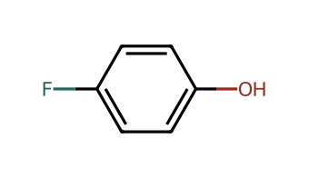

Predict molecular activity from SMILES
Use labelled reference molecules to make a binary prediction and trace it back to structural evidence and model judgments.
From labelled references to a prediction
Teaching example · synthetic labelsActive references
 p-Cresol
Closest active reference
p-Cresol
Closest active reference
Query molecule

4-FluorophenolOc1ccc(F)cc1
Inactive references
 Benzyl alcohol
Closest inactive reference
Benzyl alcohol
Closest inactive reference
-
Retrieve neighbors
Rank labelled molecules within each class by Morgan fingerprint similarity.
-
Compare evidence
Contrast structures, properties, and any measured potency in the retrieved panel.
-
Collect judgments
The model returns a label, supporting evidence, and counter-evidence.
-
Aggregate labels
The recorded judgments yield Active for the example query.
Inspect the evidence
Run the SMILES example
Use Python 3.12. The example replays saved model responses and generates an HTML report without an API key.
Set up an OpenAI-compatible service to run your own molecules. The tutorial covers the input columns, configuration, and outputs.
Read the tutorialInstall and replay
git clone --branch v0.4.0 https://github.com/studentiz/MolActAgent.git
cd MolActAgent
python3.12 -m venv .venv
source .venv/bin/activate
python -m pip install -e ".[chem]" -c examples/molecular/constraints.txt
molactagent molecular \
--reference examples/molecular/reference.csv \
--test examples/molecular/query.csv \
--id-column id \
--endpoint @examples/molecular/endpoint.txt \
--replay examples/molecular/responses.json \
--output-dir molecular-output